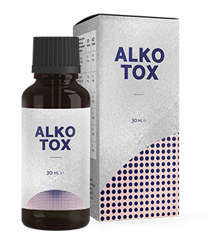

Alkotox
PREPARAT INOVATOR ÎN
LUPTA CU DEPENDENȚA
VIAȚA VOASTRĂ
FĂRĂ ALCOOL!
Nu mai este o problemă lăsatul de băutură!
- Elimină setea psihologică
- Elimină defalcările și depresia
- Reduce riscul de consumul exagerat de alcool
PREȚ NOU:
PREȚ VECHI
Până la sfârșitul promoției:

CE ÎNSEAMNĂ Alkotox?
-
Izbăvire deplină de alcool!
-
Scoate din stare de ebrietate puternică timp
de 24 de ore -
Previne depresia și deznădejdea cauzate de absența prelungită a alcoolului
eficiență este confirmată de: 3 564 505 persoane
CUM FUNCȚIONEAZĂ Alkotox
-
Izbăvire completă de
dependență de alcool -
Scoate din beții grave
-
Revenire la viață normală fără depresie
-
Elimină
eșecurile
repetate
-
Restabilește sănătatea
-
Curăță organismul de toxine și otrăvuri
-
Normalizează funcția ficatului și a rinichilor
-
Este sigur pentru sănătate
100% compoziție naturală